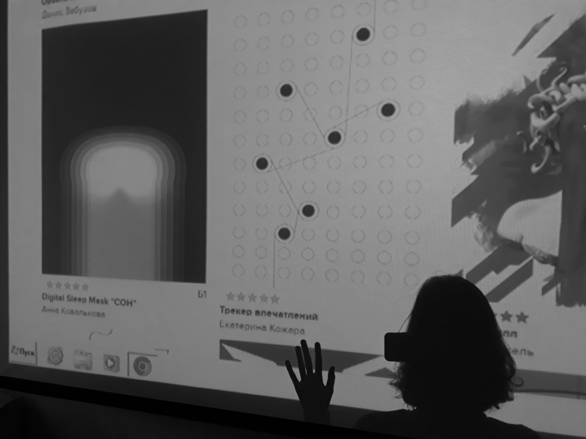
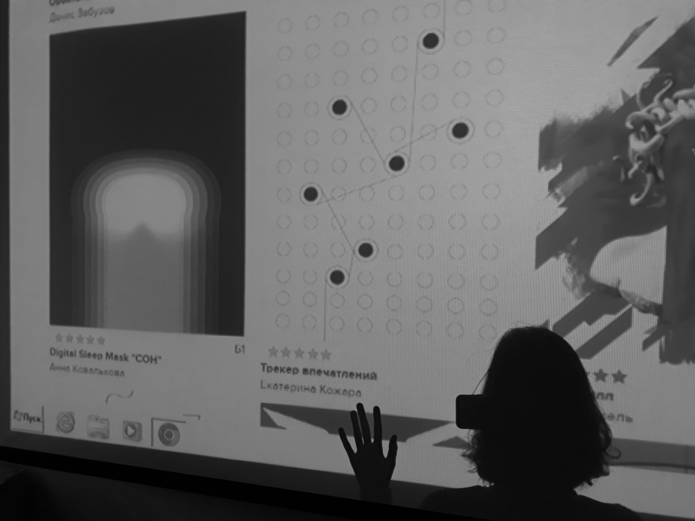
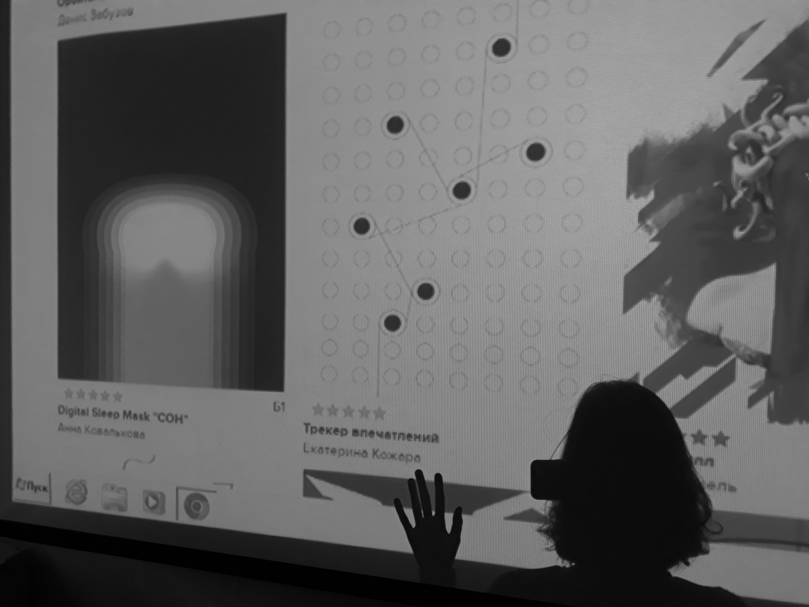

В этом модуле я делала проект, который называетя
'Трекер впечатлений'. Эта штуковина должна автоматически записывать все впечатления человека, считывая активность головного мозга. Такой технологии пока что нет, но вот те события и моменты, которые я думаю он бы записал, если бы был у меня в течение первых двух месяцев учебы.
В этот день состоялся наш первый просмотр, оказалось, что это не очень уж волнительный процесс, ведь все, что можно было сделать уже сделано: приложено максимальное количество усилий, стараний, времени и нервов, проект загруженв портфолио, недоступен для редакции. На просмотр каждого проекта комиссии нужно не больше 60 секунд.
60 секунд.
Пару коротких комментариев и ... “следующий”.
Непривычно называть это событие “просмотром”, по пятилетней привычке говорю “показ”, хотя суть дела не меняется, очень похожие, на мой взгляд, процессы.
После показа пошли пешком до Зарядья, когда прогулялись у Кати возникло предложение: “Пойдемте посидим, попишем дневники” (на скамейках летнего зрительного зала в “Зарядье”, это прямо на улице), потом все решили что это будет не слишком продуктивно и последовала прекрасная цитата Маши:
“Это даже не пахнет проактивностью”

Весь день ушел на доработку проекта, интересно, что время изменило свои свойства, теперь оно исчислялось не сутками/днем и ночью, а часами до закрытия возможности редактировать проект в портфолио.
Осваивала Indesign в вышке. Состявляла основной скелет презентации к показу. Удивительно, насколько быстро промелькнул день, 10 часов улетели, будто прошел только час.
Последняя встреча с Женей Ломакиной перед просмотром. Впечатление от дня можно выразить Жениной фразой:
“Вам сейчас самое главное почувствовать, что “я сделяль”, а дальше пусть машину ведет господь”
Отдельным человеком впечатлением в этом модуле для меня стала Света Сергеева, которая ведет у нас технические дисциплины. В этот день разбирали с ней презентации других студентов.
“колонтитулы вам нужны, чтобы не запутаться в жизни”
Все относительно. Относительно чему-то. Абсолютное позиционирование относится к относительному, а абсолютное без относительного безотносительно. В случае если абсолютное находится в относительном, то оно будет относится к относительному. Но это все отночительно, конечно.
“поиксуй по игреку, туда сюда подвинь”
“в этом мире итак уже полно отстоя, зачем плодить еще больше отстоя? Рекомендую вам не делать отстой, такой совет вам на жизнь”
“K+Z. Если древнегреческая ваза - это ваша жизнь, то вот, пожалуйста”
“вот смотрите, древнегреческая скульптура, движуха мышцы, класс! как например мышцы у черепашек ниндзя, мышцы везде. вот я в детстве очень любил черепашек ниндзя”
Новая тема на истории искусств. Темные века, средневековье. Фактики в мира галактики (случилась минутка ликбеза для непросвещенных) : Апокалипсис в переводе с греческого означает Откровение.
“и бац, все начали ждать апокалипсиса. все лишнее отсекается, когда вы ждете апокалипсиса”
Проходим ранневизантийское искусство, смотрим ролик из 90-х, чтобы запомнить название одной из главных базилик Рима. Конечно, здесь нельзя обойтись без невероятного юмора Александра Олеговича Журавлева:
“понимаете, он не может сюси пуси, потому что он уже как бы император Христос. Мы видим эволюцию христа от простого парня к императору”
Изучаем Flex с Женей. Кто знал, что есть на свете люди, придумавшие такой сервис. Котики помогали нам изучать Flex
"вернемся к нашим котикам"
“ну представьте, вы начинающий монарх и как тут быть”
“меня зовут Тимур Ибрагимович, наш предмет называется Футурология, не путать с шаманством”